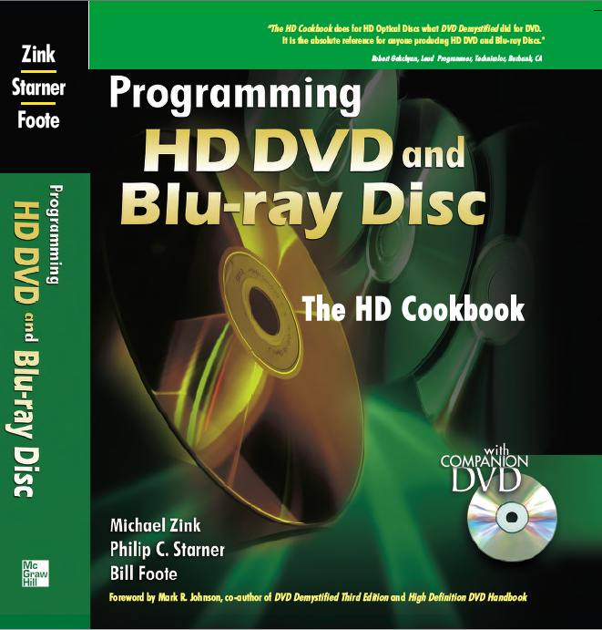

I've been a software enginner/computer programmer since a little before the days of the Apple ][. I think the first program I wrote that was semi-widely distributed was “Oscarlocator,” which I wrote around 1978 to track the OSCAR 7 satellite. I joined Javasoft/Sun Microsystems, initially on the HotJava Browser project. I was there for over a decade, and helped create parts of the Java platform, especially on consumer devices. I've also worked as a software engineer at Disney, Google, and at Celtis Technologies in France. A technical resume is available here |
|
|
|
|
| Kay Foote | Ed Foote |
My parents were both computer programmers, and they both used the JOVIAL computer language. My mother started programming in 1951 on the SEAC computer. In 1961 she used JOVIAL for an experimental air traffic control system at SDC. My father started programming in 1955. In 1959 he joined the team that created JOVIAL at SDC. He went on to work on one of the first timesharing systems, JTS (Jovial Time Sharing).
You can read more about JOVIAL and my parents' pioneering computer work here.
|
I joined the Peace Corps in June 2017, and was sent to Burkina Faso, in west Africa. I was all set to volunteer as a middle school physics/chemistry teacher for two years. Unfortunately, five weeks in, a motorcycle hit me when I was on my bicycle, and gave me a rather serious broken leg. Because there was nerve damage, the total recovery time was about a year, so I was medically separated. After recovery, I re-joined, and went to Senegal in September 2019. Sadly, acid reflux forced me to come home soon after arrival; the doctor there described the Senegalese diet as "one big acid reflux party." Sigh. You can see more about both in my blogs, at http://pc.jovial.com/. |
|||||
|
|||||

|
I volunteered with Video the Vote in 2006, using the power of video and YouTube to document any voting irregularities there might be in the 2006 mid-term elections. I was even interviewed by CNN in connection with this! Here's a writeup of my day as a “citizen-journalist.” |
||||
|
I've done work with Project Hope in Nablus, Palestine. I started with teaching in refugee camps over the summer of 2003. In 2006, I started making videos, under the “moomtastic video” project. |

|
In April 2018, I started as a Computer Science lecturer at Cal Poly, San Luis Obispo. My Cal Poly page is here. | |
| I taught introductory C programming at Santa Monica College for the Winter Term, 2018. It was a class that's normally 15 weeks, compressed into a six-week term. In addition, teaching C an pointers in an intro-level class is not for the faint of heart. The students were fantastic, and I very much enjoyed teaching. I moved on from SMC when I got a full-time offer from Cal Poly, and so I could take a month off for what is planned to be my final leg surgery (see Peace Corps, below). |
|  |
|
| CorpsBlog, a static site generator. I wrote this to generate my Peace Corps blog, http://pc.jovial.com/. It's written in Kotlin, and is optimized around maintaining a blog with infrequent access to the itnernet, like you'd get if you lived in a mud hut and had to ride your bicycle several miles to get an internet connection. It might be overkill, but I follow the computer programmer's credo, “never spend an hour doing something you could spend a day automating.” |
| Simples, the Simple HTTP Server. This is an extremely simple, no-configuration http server written in Kotlin that's designed to be invoked from the command line. I find it useful when I have files to transfer between local computers, and a USB stick is inconvenient and I don't want to set up file sharing. |
| Heap Analysis Tool Prototype (HAT). This is a prototype tool to explore object topologies and find unintentional object retention problems in Java programs. It was eventually extended and incorporated into JDK 1.6. |
| TASS on dev.java.net, a tool for checking conformance to only the APIs present in a given platform. |
|
|